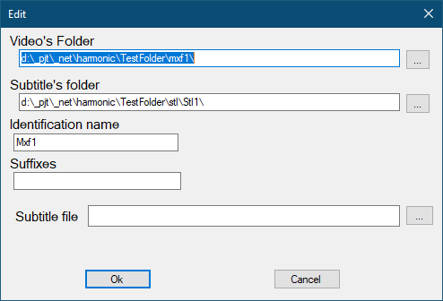

The host editor

- Video's folder - folder with video files for which subtitles are checked
- Subtitle's folder - folder with subtitles files
- Identification name - The name used for logging. Must be unique.
- Suffixes - enumeration of language suffixes (separated by comma or semicolon) for which the presence of subtitles is checked. If this field is empty, then the value from the program settings is used.
- Subtitle file - The subtitles file that are will copy instead of missing subtitles. If this field is empty, then the value from the program settings is used.
The suffixes and extensions must be placed on one line, separated by , or ; Spaces are considered!